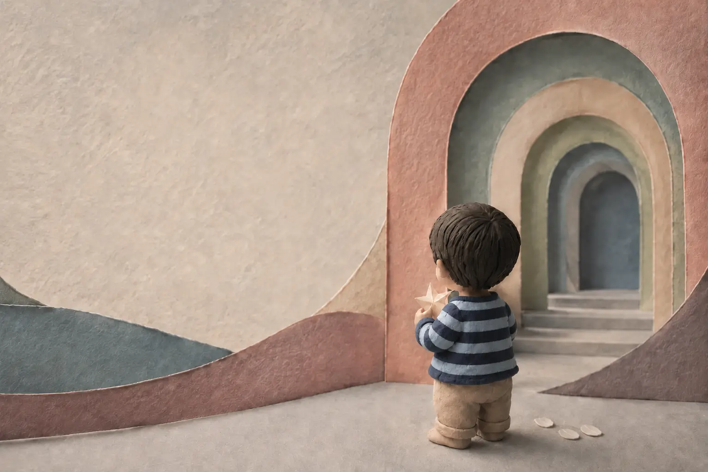
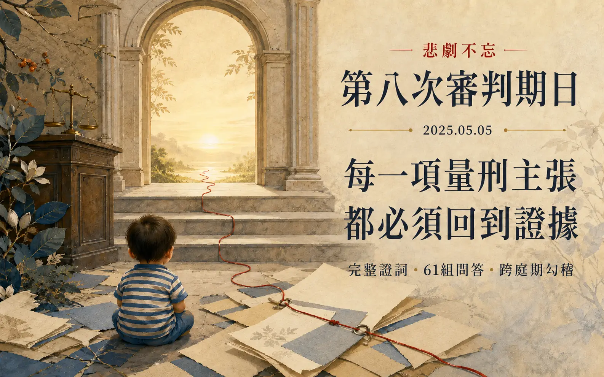
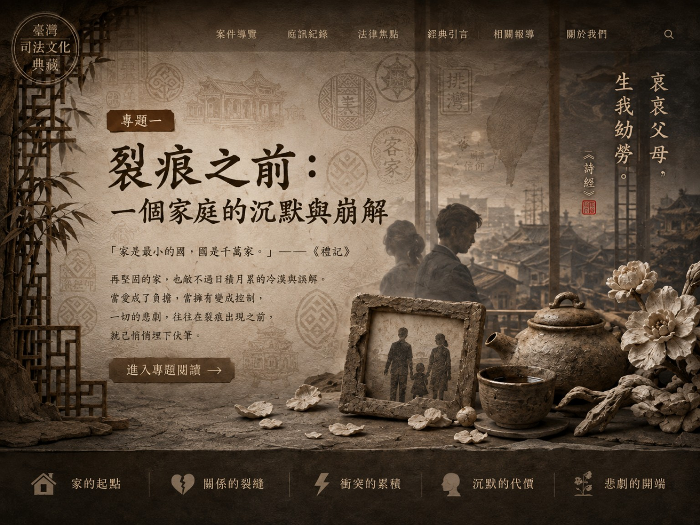
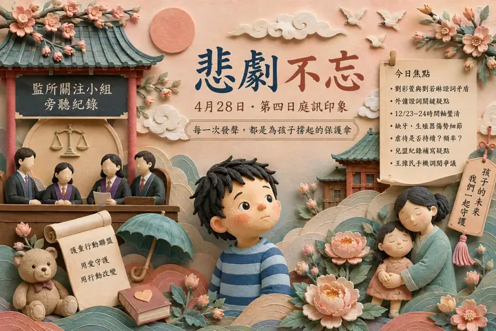
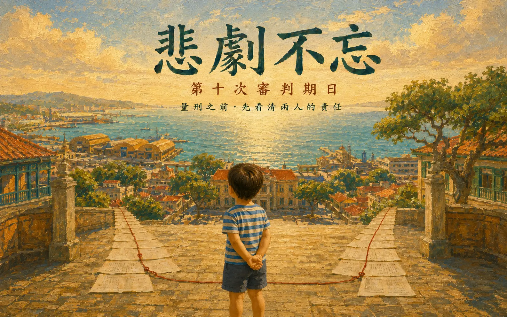

![](…197347 tokens truncated…嫩的夏日海岸留下祝福、關心與倡議，讓每一張守護便條乘著海風相遇，也讓孩子被更多人看見與接住。</p>
<span class=) 進入守護留言牆
進入守護留言牆
從法院紀錄、案件追蹤到公共倡議，讓重要的事情被看見， 也讓每一個孩子的安全被真正放在第一位。
九則置頂快報可自動循環與手動橫向移動；最新發布的 10 篇文章搭乘 GSAP 童趣摩天輪緩慢轉動。

09.03 · 法院旁聽・置頂《那一聲質問，落在每一個大人的心上》法官的質問越過法庭，落向台灣社會每一個看見兒少警訊的大人。 09.03 · 剴剴案導覽・置頂剴剴案導覽簡介三名案件關係人 × 三方權責與跨系統資訊關係樹。![《多到抄不完的傷》：以旁聽筆記、傷勢分布圖與紙心呈現的非獵奇主視覺]() 09.01 · 旁聽紀錄・四語置頂《多到抄不完的傷》旁聽者記下傷勢分布圖的鑑定說明；四語整理庭訊觀察與公開開庭資訊。
09.01 · 旁聽紀錄・四語置頂《多到抄不完的傷》旁聽者記下傷勢分布圖的鑑定說明；四語整理庭訊觀察與公開開庭資訊。
 08.31 · 法律觀察・置頂保證人地位｜誰有義務把孩子接住？從剴剴案理解保護義務、作為與不作為的法律界線
08.31 · 法律觀察・置頂保證人地位｜誰有義務把孩子接住？從剴剴案理解保護義務、作為與不作為的法律界線
 08.29 · 剴剴案特定專題・置頂第二章｜沒人要的孩子孩子被選擇的人生・收出養、照顧交接與制度責任的完整追問
08.28 · 剴剴案特定專題・置頂第一章｜沒有父母的孤兒從椅仔姑傳說走入剴剴案・二十四篇動畫長卷 × 八篇正文
08.29 · 剴剴案特定專題・置頂第二章｜沒人要的孩子孩子被選擇的人生・收出養、照顧交接與制度責任的完整追問
08.28 · 剴剴案特定專題・置頂第一章｜沒有父母的孤兒從椅仔姑傳說走入剴剴案・二十四篇動畫長卷 × 八篇正文
 08.27 · 二審庭期更新・置頂陳尚潔案二審準備程序9月16日下午2時30分・臺灣高等法院專一法庭
08.27 · 二審庭期更新・置頂陳尚潔案二審準備程序9月16日下午2時30分・臺灣高等法院專一法庭
 08.26 · 最新快報・置頂羅氏兄弟冤案更審最新進度、案件脈絡與完整文件
08.26 · 最新快報・置頂羅氏兄弟冤案更審最新進度、案件脈絡與完整文件
 08.25 · 捐款公告・置頂把共同的支持，延續成另一份守護1月11日反廢死護兒少大遊行｜活動公費結餘 27,128 元已全數捐贈公益
08.25 · 捐款公告・置頂把共同的支持，延續成另一份守護1月11日反廢死護兒少大遊行｜活動公費結餘 27,128 元已全數捐贈公益

08.26 · 最新旁聽紀錄第八次審判期日證據調查、論告與量刑文件整理 08.25 · 台灣歷史案件新作台南湯姆熊男童命案他說不會判死，後來真的沒有判死
08.25 · 台灣歷史案件新作台南湯姆熊男童命案他說不會判死，後來真的沒有判死
 08.23 · 最新旁聽紀錄土城家暴雙屍案一審宣判、量刑攻防與完整旁聽整理
08.23 · 最新旁聽紀錄土城家暴雙屍案一審宣判、量刑攻防與完整旁聽整理

08.23 · 社會案件專題裂痕之前一個家庭的沉默與崩解 08.22 · 旁聽紀錄第五次審判期日兩位醫師證詞與醫學證據對照
08.22 · 旁聽紀錄第五次審判期日兩位醫師證詞與醫學證據對照

08.21 · 旁聽紀錄第四次審判期日兩位證人、三處動線與傷勢通報 08.20 · 9/16 開庭前行動一起寫下剴剴的故事留下感受、疑問與改變期待
08.20 · 9/16 開庭前行動一起寫下剴剴的故事留下感受、疑問與改變期待
摩天輪會緩慢轉動；滑鼠移入、觸碰或拖曳時暫停，點選車廂即可閱讀完整內容。
近期更新的案件文件、活動紀錄、歷史案件與社會觀察，搭乘童趣摩天輪與你相遇。
進入守護留言牆
把公共倡議、被害者支持與兒少保護行動，整理成可以被看見、查閱與記住的共同紀錄。
置頂・心得募集
距離9月16日陳尚潔涉過失致死案二審準備程序不到一個月，護童行動聯盟成員於8月20日前往臺北車站展開宣傳行動，讓案件進度、制度責任與孩子被接住的權利持續被看見。
成員從東一門、北二門、站前廣場走進車站大廳，手持訴求牌並展示案件與聯盟簡介傳單。短暫進入旅人視線的一張傳單、一面牌子，也能累積成不讓悲劇被時間帶走的公共記憶。
他們本該長大。
願悲劇止於此刻，願孩子都能被接住。
以上為活動現場訴求之紀錄。本案二審仍在審理；個別刑事責任與法律評價，仍應由法院依證據與法定程序認定。
8月1日，被害者家屬與一群素人爸媽走上凱道，為反毒駕、反酒駕與兒少保護發聲。這不是顏色或立場的競逐，而是失去摯愛的人，仍努力為家人等待公平與正義。
真正值得被看見的，不是人數，不是立場，而是每一位仍願意站出來、替家人與孩子留下聲音的人。
一場活動的價值，不該只由參與人數定義。彼此陪伴、互相理解，讓社會看見被害者家屬與受害孩子，就是繼續前行的力量。
庭期、時間與法庭異動集中呈現；出發前請再確認法院當日公告。
最新紀錄保留完整主視覺，較早紀錄改為精簡入口；讓首頁快速掌握重點，再進入專頁閱讀完整內容。

最新重製紀錄・第十日檢方與兩方辯護人如何主張刑度，並把DAY10量刑論告放回DAY9兩名被告原始問答逐項核對。
以文化記憶、司法紀錄與社會觀察為線索，讓重要議題在紙雕層次與陶土溫度中被重新看見。
08.31 · 法律觀察2026.08.31 · 保護義務 × 專業責任 × 法律界線保證人地位｜誰有義務把孩子接住？保證人地位不等於必然有罪；專題從剴剴案出發，整理可接觸、可查證、可通報時點的法律責任。閱讀完整專題 →
08.29 · 剴剴案第二章2026.08.29 · 收出養 × 照顧交接 × 制度責任第二章｜沒人要的孩子沿著孩子被安排的照顧路徑，勾稽庭審證詞、醫療警訊與沒有閉合的制度責任。閱讀第二章 →
08.28 · 剴剴案第一章2026.08.28 · 二十四篇動畫長卷 × 八篇正文第一章｜沒有父母的孤兒從椅仔姑傳說走入剴剴案，追問制度與不同大人交接之間，誰真正看見了孩子。閱讀第一章 →
08.31 · 法律觀察2026.08.31 · 保證人地位 × 不作為責任誰有義務把孩子接住？從剴剴案追問：保護義務能否被業務分工切割？閱讀專題 →
 08.13 · 社會觀察2026.08.13 · 兒虐辨識 × 安全行動看見・聽見之後辨識反覆出現的傷，接住沒有說完的求救，讓保護更早抵達。閱讀專題 →
08.13 · 社會觀察2026.08.13 · 兒虐辨識 × 安全行動看見・聽見之後辨識反覆出現的傷，接住沒有說完的求救，讓保護更早抵達。閱讀專題 →
 08.11 · 古老的傳說2026.08.11 · 文化記憶 × 司法紀錄綁在椅子上的孩子從椅仔姑到剴剴，追問孩子還活著時，為什麼沒有人及時打開那扇門。閱讀專題 →
08.11 · 古老的傳說2026.08.11 · 文化記憶 × 司法紀錄綁在椅子上的孩子從椅仔姑到剴剴，追問孩子還活著時，為什麼沒有人及時打開那扇門。閱讀專題 →
依上傳時間由左向右排列｜可左右滑動瀏覽文章
 大陸案件・一審判決
大陸案件・一審判決 司法程序追蹤中
司法程序追蹤中 三審定讞
三審定讞 上訴審理中
上訴審理中 審理中
審理中 二審中
二審中 二審中
二審中 一審中
一審中回看不同年代與地區的兒少案件，不為重複傷痛，而是辨識制度如何失守，以及改變從何處開始。
 台灣｜臺南・2012TAIWAN HISTORICAL CASE台南湯姆熊男童命案他說不會判死，後來真的沒有判死｜紙雕戲臺與歷審記憶專題
台灣｜臺南・2012TAIWAN HISTORICAL CASE台南湯姆熊男童命案他說不會判死，後來真的沒有判死｜紙雕戲臺與歷審記憶專題
 大陸｜福建MAINLAND CHINA HISTORICAL CASE福建莆田琪琪案村口一直等不到的媽媽｜十二歲女孩的求救與遲來的司法追問
大陸｜福建MAINLAND CHINA HISTORICAL CASE福建莆田琪琪案村口一直等不到的媽媽｜十二歲女孩的求救與遲來的司法追問
 台灣｜2005TAIWAN HISTORICAL CASE人皮燈籠案／刺青針刑虐童案正文統一稱傅小弟｜公開歷審最終16年
台灣｜2005TAIWAN HISTORICAL CASE人皮燈籠案／刺青針刑虐童案正文統一稱傅小弟｜公開歷審最終16年
 台灣｜2011TAIWAN HISTORICAL CASE王昊案名字寫進了法條，保護不能停在紙上
台灣｜2011TAIWAN HISTORICAL CASE王昊案名字寫進了法條，保護不能停在紙上
 大陸｜內蒙古MAINLAND CHINA HISTORICAL CASE內蒙古田田案她沒有等到春天｜二審維持原判
大陸｜內蒙古MAINLAND CHINA HISTORICAL CASE內蒙古田田案她沒有等到春天｜二審維持原判
 日本｜千葉JAPAN HISTORICAL CASE栗原心愛事件守不住的問卷，與沒有走完的冬天
日本｜千葉JAPAN HISTORICAL CASE栗原心愛事件守不住的問卷，與沒有走完的冬天
截至 2026 年 8 月 20 日。每一個數字，都是志工夥伴實際到場、記錄、聲援與陪伴留下的足跡。
持續記錄司法程序與重要庭訊，陪伴案件走過漫長審理。
把兒少安全、被害者支持與制度倡議帶進公共空間。
讓關注不只停留在文字，也化為具體的陪伴與支持。
最新收錄的實體與線上行動，與活動紀錄同步更新。
記錄案件審理進程、重要庭訊與司法程序。
整理公開庭期、裁判及可查證資訊。
將分散資訊整理成易懂脈絡，推動兒少保護制度落實。
尊重家屬的聲音，讓漫長司法路上的努力被看見。
四款志工識別延續「守護、家庭、燈火與前行」的共同視覺語彙，可依不同活動與倡議情境彈性使用。
以上為藝術意象說明，用於品牌與倡議視覺詮釋，不代表法律、政策或個案事實之認定。
以人物、制度與資訊流向，快速理解案件全貌。
把孩子的安全與最佳利益放在第一位。
推動制度檢討與改革，強化兒少保護網絡。
集結公民力量，一起打造更安全的社會。
持續關注、持續行動，守護每一個孩子的未來。


官方社群
Facebook、Instagram、Threads 已整理至獨立官方社群頁面，可從各平台 藝術圖卡前往追蹤。